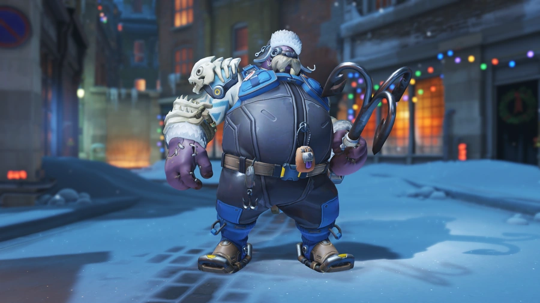
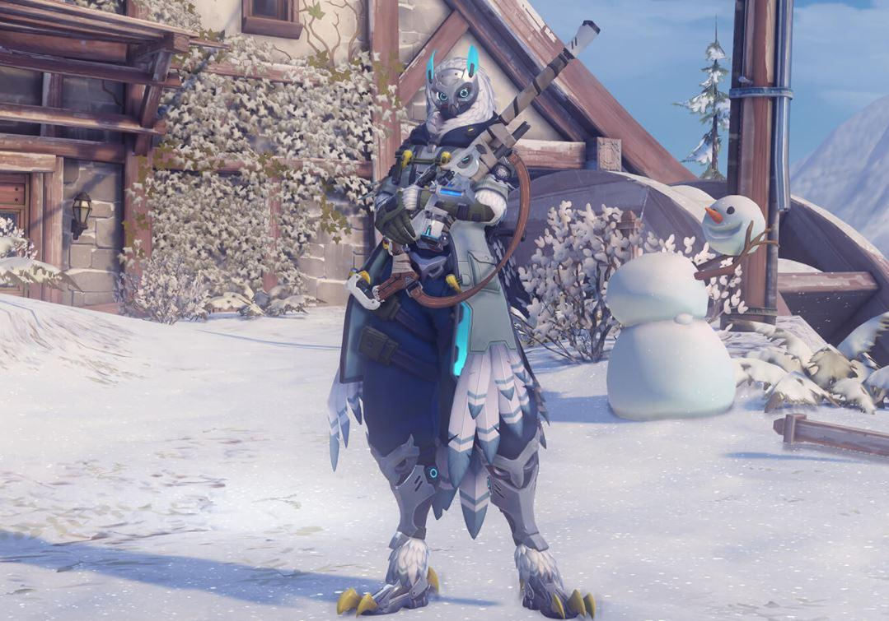
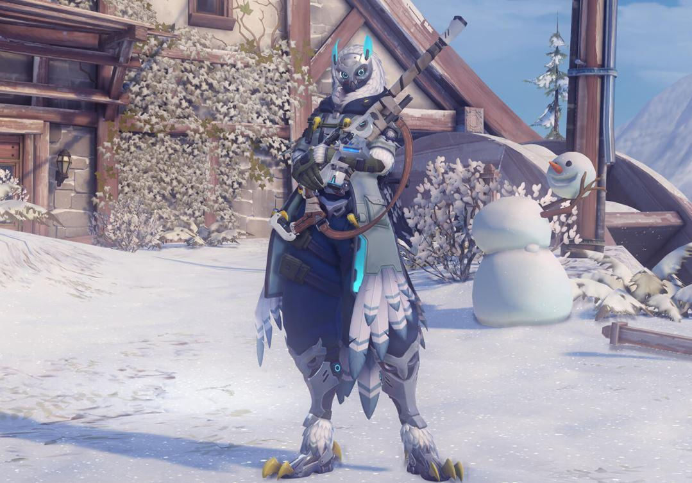
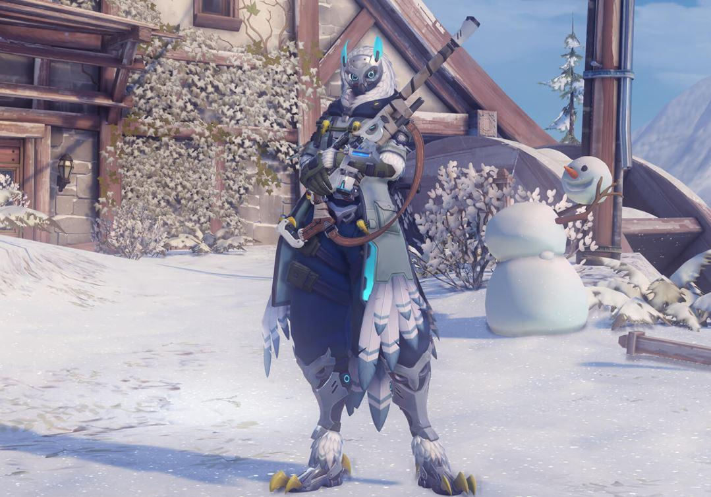

Overwatch, My Favorite Game
I started playing Overwatch in 2017, and it has been my favorite game ever since.
My History With Overwatch
I fell in love with Reaper and Bastion at first because they were easy to use. As I played Mystery Heroes and watched more YouTube videos on who to use and how to use them, I started to love the whole cast. Eventually, Genji became my favorite.
My Highest Rank
- Support: Grandmaster
- DPS: Master
- Tank: Master
Why I Play
- I love FPS games.
- I like communicating with a team.
- I love how toxic the game is.
- I like that there are many heroes to use and learn.
Basic Overwatch History
- Team-based shooter with hero abilities and roles.
- Matches reward teamwork, timing, and communication.
- Heroes fit into Tank, Damage, and Support.
Overwatch Cast

 


